여러 레포에서 에이전트를 쓰면 생기는 문제
Matt는 이 기법이 너무 뻔해서 굳이 올릴 생각이 없었다고 해요. 그런데 자기가 운영하는 코호트의 오피스 아워에서 보여 주자 다들 놀랐고, X에 올리자 크게 퍼졌어요. 질문은 하나예요. 레포가 여러 개일 때 에이전트를 어떻게 쓰느냐는 거죠.
한 세션에서 여러 레포를 고치는 건 쉬워요
예시 조직에는 상점 화면 acme/storefront, 결제 API(Application Programming Interface) acme/payments-api, 관리자 화면 acme/admin-dashboard, 그리고 가끔 들르는 레포 20개가 더 있어요. storefront만 고칠 땐 거기서 에이전트를 띄우면 돼요. 작업 중에 payments-api도 고쳐야 한다는 걸 알게 돼도 괜찮아요. 에이전트는 디렉터리 여러 곳을 한 번에 다룰 수 있어서 한 세션에서 PR(Pull Request) 두 개가 나와요.
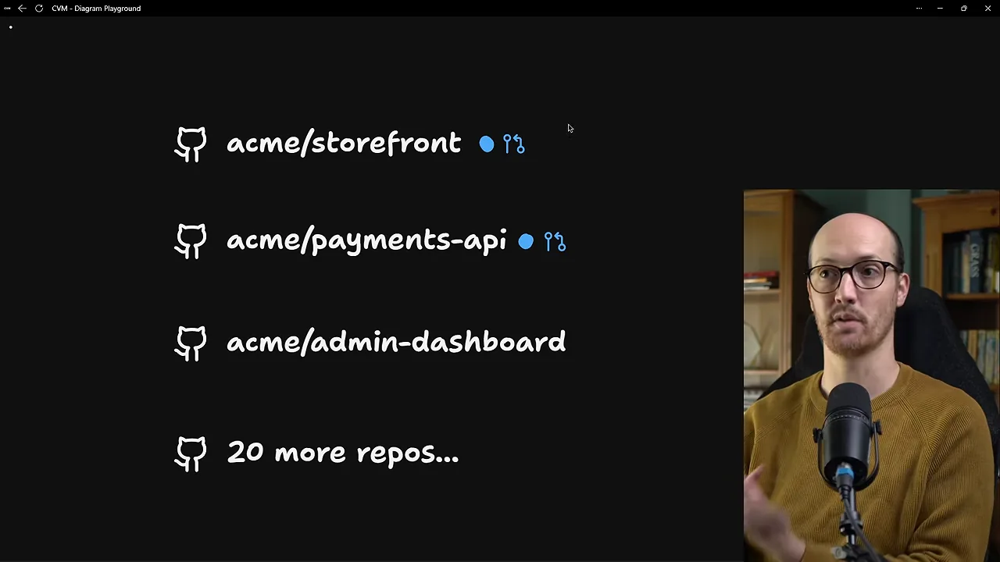
모든 세션에 필요한 것들은 어디 두나요?
진짜 문제는 코드가 아니라 스티어링 파일이에요. 스킬, 도구, AGENTS.md, 위키 링크처럼 어느 세션에서든 에이전트가 갖고 있어야 할 것들이죠. 흔한 답은 이걸 레포마다 복사해 두는 거예요. 아래 그림에서 레포마다 붙은 파란 Skills, 초록 Tooling 꼬리표가 그 복사본이에요.
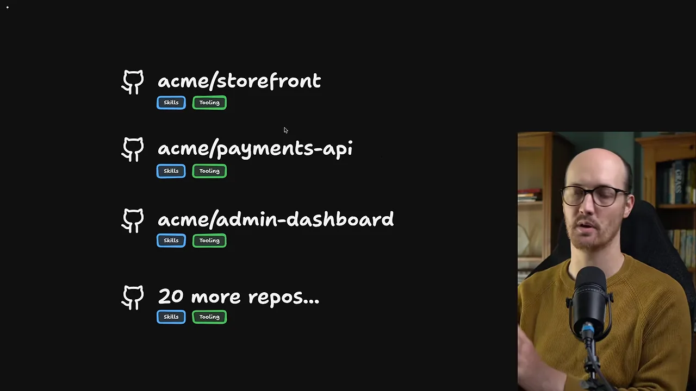
다른 답은 사용자 폴더, 즉 ~/.claude에 한 벌만 두는 거예요. 그림에서는 꼬리표가 맨 위 ~/.claude로 올라가고 레포들은 깨끗해졌어요.
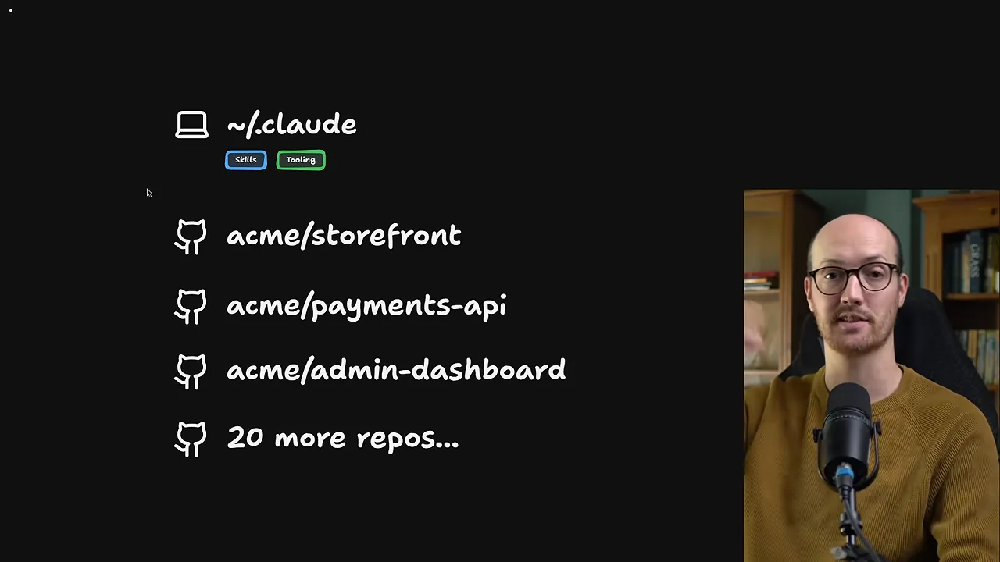
Matt는 두 방식 모두 별로라고 봐요. 정리하면 이래요.
| 두는 곳 | 좋은 점 | 문제 |
|---|---|---|
| 레포마다 복사 | 어느 레포에서 띄워도 같은 스킬과 도구 | 30~40개 레포에 걸쳐 계속 동기화해야 해요 |
사용자 폴더 ~/.claude | 한 벌만 두면 모든 레포에서 보여요 | 눈에 안 띄어 업데이트가 안 되고 팀 설정보다 뒤처져요. 원래 개인 취향을 담는 곳이기도 해요 |
| 홈 레포 (다음 섹션) | 한 벌, 버전 관리, 모두가 같은 곳에서 시작 | 에이전트를 늘 홈 레포에서 띄워야 해요 |
I think of the users directory as the place where the user can make changes to their setup that suits how they work instead of how the team wants them to work.
사용자 폴더는 팀이 원하는 방식이 아니라, 그 사람이 일하는 방식에 맞춰 설정을 바꾸는 곳이라고 봐요.
— 영상 01:38
홈 레포라는 해법과 실제 구성
홈 레포는 스킬, 스티어링 파일, 위키, 자체 도구가 모두 사는 레포 하나예요. 그리고 에이전트는 언제나 이 레포 안에서 띄워요. Matt가 X에 올린 글이 그 정의예요. 파란 줄이 핵심 문장이고, 아래 코드 블록이 다른 레포를 가리키는 포인터 예시예요.
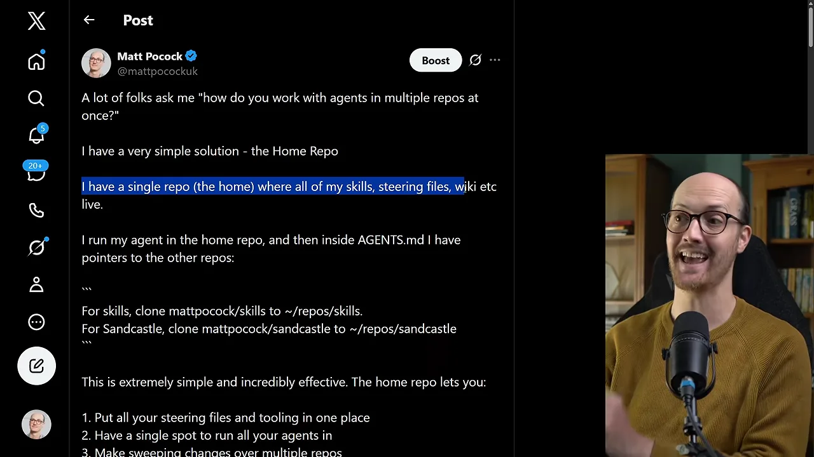
홈 레포도 평범한 레포예요. 그래서 그 안에서 도는 에이전트가 storefront와 payments-api로 손을 뻗어 여러 레포를 한꺼번에 다루고, 필요한 맥락을 끌어올 수 있어요. 그림에서 acme/home에만 Skills·Tooling 꼬리표가 있고, 거기서 나간 화살표가 두 레포로 이어져요.
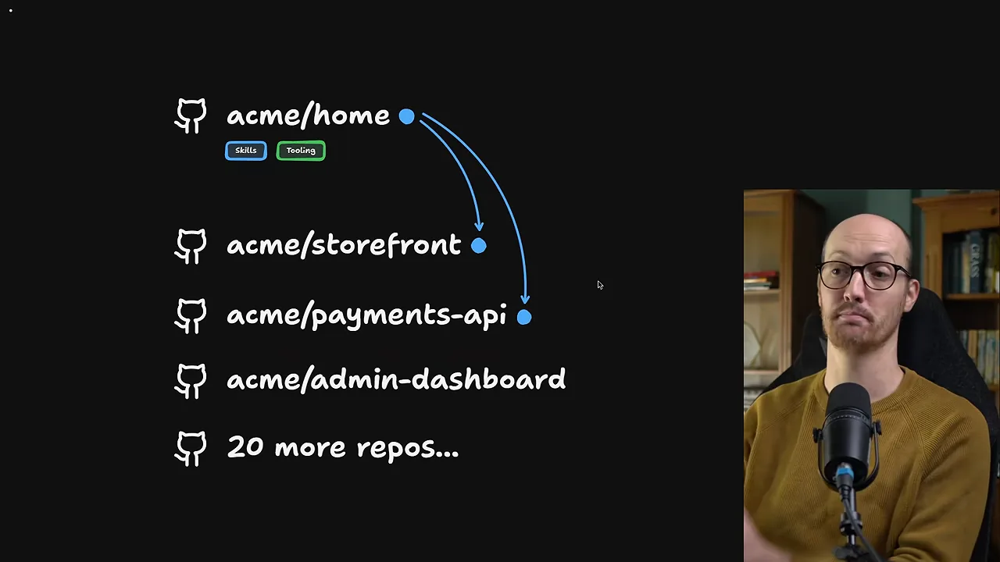
실제 홈 레포에서 볼 세 곳
Matt의 홈 레포 이름은 personal-wiki예요. 먼저 .claude/skills예요. 오른쪽 탐색기에 animatic, blocker, course-planner, creating-content 같은 스킬 폴더가 길게 이어져요. 사업에 너무 민감해서 공개하지 않는 비공개 스킬들인데, 여기 있으니 모든 세션에서 쓸 수 있어요. 조직에 공통 스킬 목록이 있다면 바로 여기 넣으면 돼요.
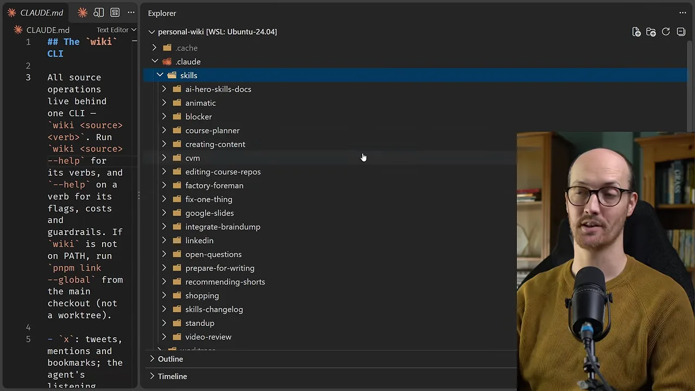
두 번째는 같은 .claude 폴더 안의 settings.json이에요. 설정도 버전 관리를 할 수 있다는 뜻이에요. 모두가 이 레포에서 에이전트를 띄우니, 여기서 바꾼 설정이 조직 전체에 곧바로 퍼져요.
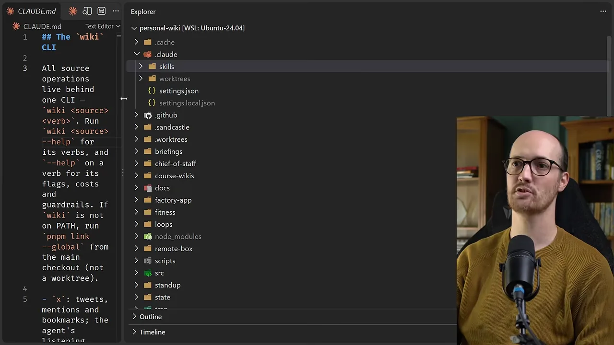
세 번째가 구조의 중심인 CLAUDE.md(또는 AGENTS.md)예요. 말로는 agents.md라고 하지만 화면에 열린 파일은 CLAUDE.md예요. 그 안 ## Other Repos 아래에 Matt가 매일 만지는 레포로 가는 내비게이션 포인터가 줄줄이 있어요. 스킬을 고칠 땐 ~/repos/ai/skills, 커밋이 가장 많은 Course Video Manager(CVM(Course Video Manager))는 ~/repos/matt/course-video-manager, 그 밖에 Cohort 005 프로젝트와 AI(Artificial Intelligence) Coding Crash Course 레포도 있어요.
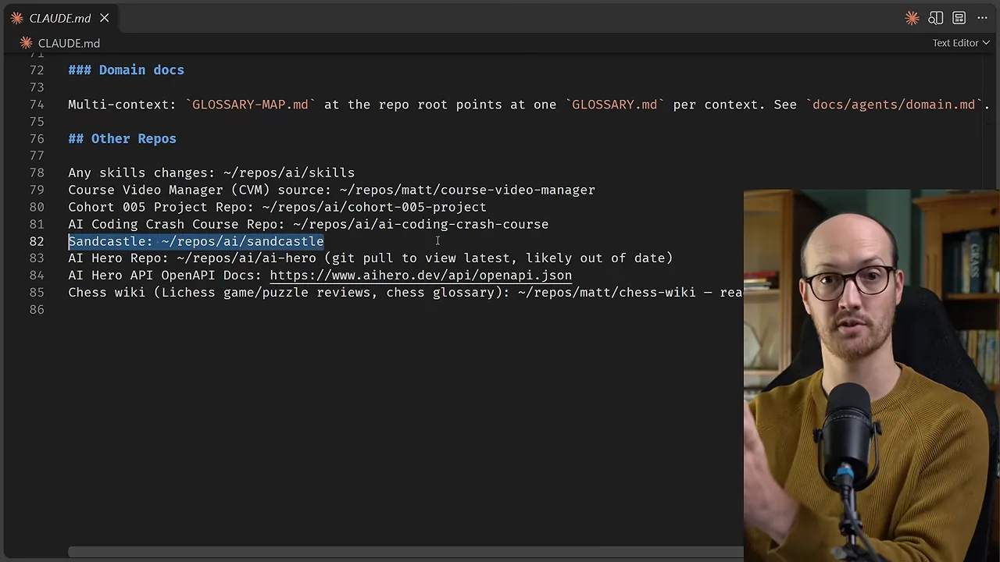
포인터를 따라가면 일어나는 일
새 컴퓨터에서 에이전트가 ~/repos/ai/sandcastle을 열려는데 거기 없다면, 에이전트가 직접 clone해 와요. 에이전트 여러 개가 같은 레포를 동시에 쓰면 그 clone 안에 worktree를 하나씩 만들어 써요. 그래서 따로 할 설정이 사실상 없고, 가끔 worktree 정리만 해 주면 돼요. 레포를 하나 더 붙이고 싶으면 파일에 한 줄 더 쓰면 끝이에요.
flowchart TB
A["홈 레포에서 에이전트 시작"] --> B["CLAUDE.md 포인터 읽기"]
B --> C{"경로에 레포가 있나?"}
C -- "없어요" --> D["그 경로로 clone"]
C -- "있어요" --> E["그 자리에서 작업"]
D --> E
E --> F{"에이전트가 여럿?"}
F -- "네" --> G["같은 clone 안에 worktree"]
레포가 수백 개라면, 그리고 모노레포는?
Matt는 이 방식이 레포 20~40개까지는 잘 된다고 봐요. 하지만 400개쯤 되면 레포를 한 줄씩 늘어놓는 걸로는 버거워요. 그럴 땐 AGENTS.md에 점진적 공개를 한 단계 넣어요. 레포 대신 영역별 문서를 가리키는 거예요.
화면을 보면 AGENTS.md 아래에 docs/FRONTEND.md, docs/BACKEND.md, docs/INTERNAL.md 세 문서가 있어요. 각 문서 아래에 acme/storefront, acme/payments-api, acme/admin-dashboard와 '20 more...'가 매달려 있어요.
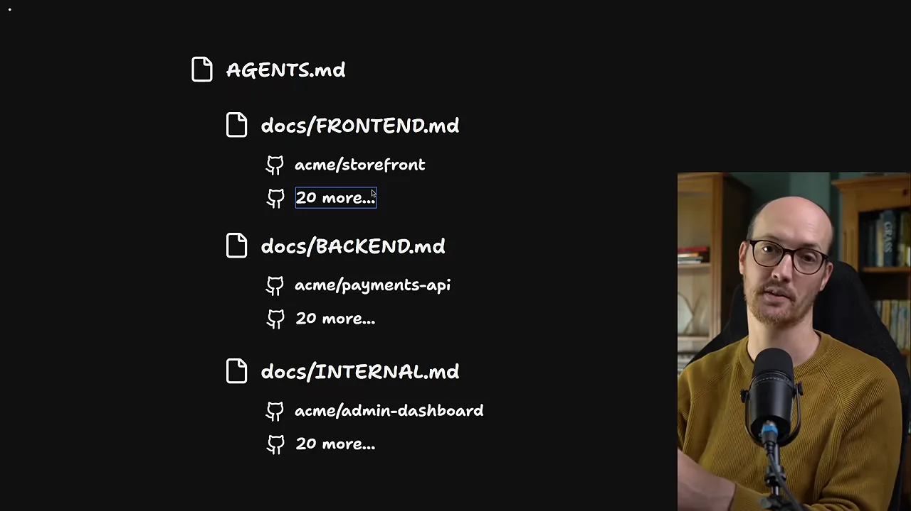
모노레포가 되면 그게 먼저예요
Matt는 Vercel에서 Turborepo DevRel로 일했을 만큼 모노레포를 좋아한다고 해요. 모든 걸 한 레포에 넣을 수 있다면 그렇게 하라는 게 첫 번째 답이에요. 하지만 늘 그렇게 되진 않아요. 어떤 레포는 공개여야 하고 어떤 레포는 비공개여야 할 때가 그래요. 그리고 대부분은 조직의 정치적 의지 때문에 못 옮겨요. 그때 차선이 홈 레포예요.
If you can move all this stuff into a single repo, then great. If you can't, and most likely you can't just because of political will, then a home repo is the way to go.
전부 한 레포로 옮길 수 있으면 좋아요. 못 한다면, 아마 정치적 의지 때문에 못 하겠지만, 홈 레포가 답이에요.
— 영상 05:30
홈 레포에서 자라는 위키와 자체 도구
Matt는 홈 레포를 쓰고 나서 에이전트용 도구를 훨씬 과감하게 만들게 됐다고 해요. 늘 같은 곳에서 에이전트를 띄우니, 도구를 어디 둘지 고민할 필요가 없어진 거예요.
사업 데이터를 모은 LLM 위키
그래서 Matt는 홈 레포를 '퍼스널 위키'라고 불러요. 사업에 민감한 데이터를 모은 거대한 위키가 wiki 폴더에 있어요. 카파시 스타일의 LLM 위키로, 청중이 흥미로워하는 주제를 마크다운 파일로 쌓아 둔 거예요. 화면의 wiki/audience 폴더를 보면 ai-coding-fatigue, claude-code-verbosity, context-window-management, gap-agent-observability 같은 파일이 길게 이어져요.
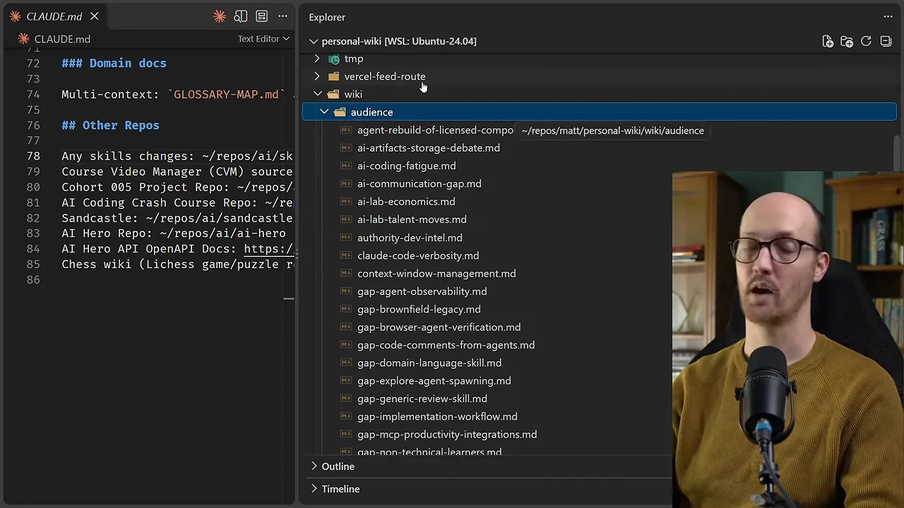
Matt는 여기에 질의해서 강의 제작과 콘텐츠 제작에 쓸 풍부한 데이터를 뽑아요. 위키를 어떻게 만들고 최신으로 유지하는지는 다음 영상에서 다룬다고 했어요. 다이어그램에서도 acme/home에 노란 Wiki 꼬리표가 하나 더 붙었어요.
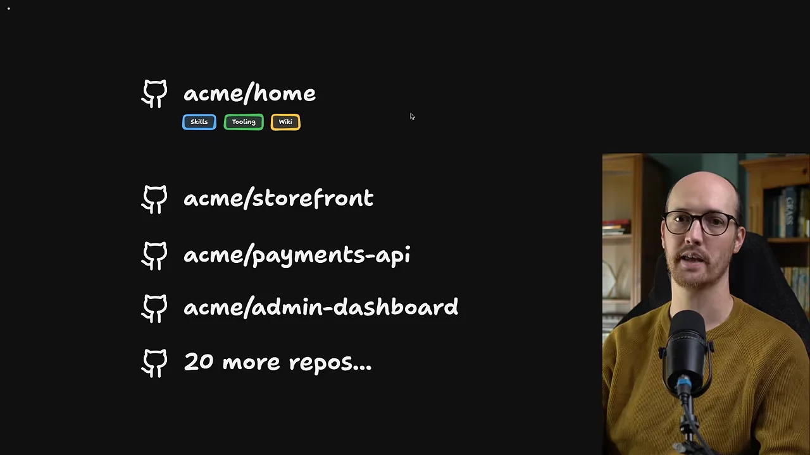
사업 도구를 잇는 wiki CLI
Matt가 더 강조하는 건 도구예요. 에이전트가 사업에 쓰는 서비스와 연결되도록 자체 도구를 쥐여 주는 거죠. 홈 레포에서 wiki --help를 치면 명령이 쭉 나와요. 왼쪽 열이 명령, 오른쪽이 하는 일이에요.
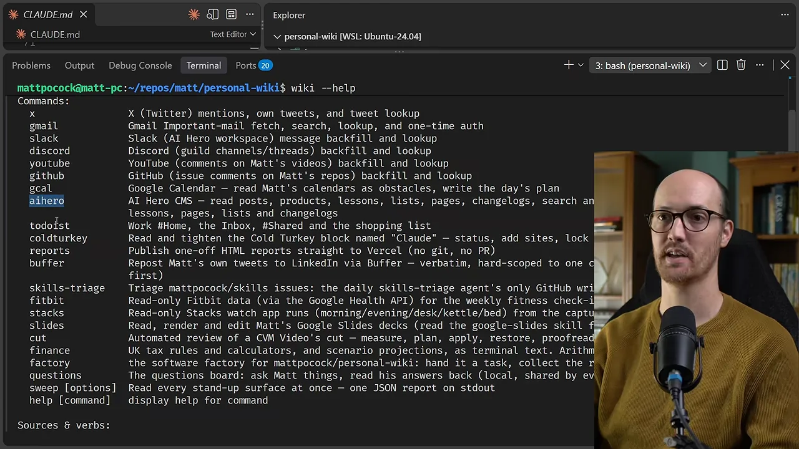
영상에서 직접 짚은 것만 추리면 이래요.
| 명령 | 화면에 적힌 일 |
|---|---|
gmail slack discord | 중요 메일, AI Hero 워크스페이스, Discord 채널의 메시지를 받아 오고 찾아봐요 |
youtube github | Matt 영상의 댓글, Matt 레포의 이슈 댓글을 받아 오고 찾아봐요 |
gcal | Google Calendar를 읽고 하루 계획을 써요 |
aihero | AI Hero CMS의 글, 상품, 레슨 등을 읽어요 |
coldturkey | 'Claude'라는 이름의 Cold Turkey 차단 목록을 확인하고 조여요 |
reports | 일회성 HTML(HyperText Markup Language) 리포트를 Vercel에 바로 올려요 |
buffer | Matt의 트윗을 Buffer로 LinkedIn에 재게시해요 |
이 도구들은 홈 레포 안에서 저절로 자라났어요. 늘 한곳에서 돌리니 하나씩 붙일 때마다 쌓여서 큰 생태계가 됐다는 거예요.
레포와 데이터를 한 번에 엮는 요청
그래서 이런 요청이 가능해져요. Discord에서 메시지를 찾고, 크래시 코스 레포에서 기존 스킬로 고치고, Course Video Manager의 CVM 스킬로 강의 자체도 고쳐요. 화면에서 Matt는 .claude/skills/cvm 폴더를 열어 SKILL.md가 거기 있음을 보여 줘요.
flowchart TB A["Discord에서 메시지 조회 (wiki CLI)"] --> B["AI Coding Crash Course 레포에서 수정 (기존 스킬)"] B --> C["CVM 스킬로 강의 편집 (Course Video Manager)"]
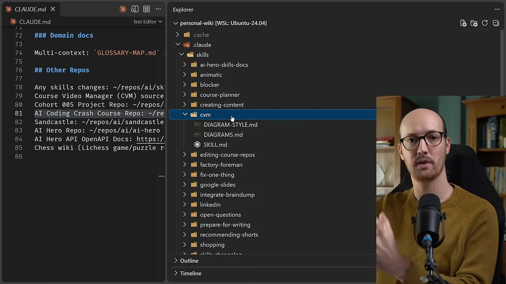
The home repo becomes the tooling that links all different parts of your business up together, not only the code.
홈 레포는 코드만이 아니라, 사업의 여러 부분을 하나로 잇는 도구가 돼요.
— 영상 07:43
직접 만들어 보기
직접 세팅하려면 Matt가 쓴 'The Home Repo Pattern' 글을 보면 돼요. 글 맨 위 한 줄 요약이 '스킬, AGENTS.md, 공유 문서를 담는 레포 하나와 다른 레포로 가는 포인터'예요.
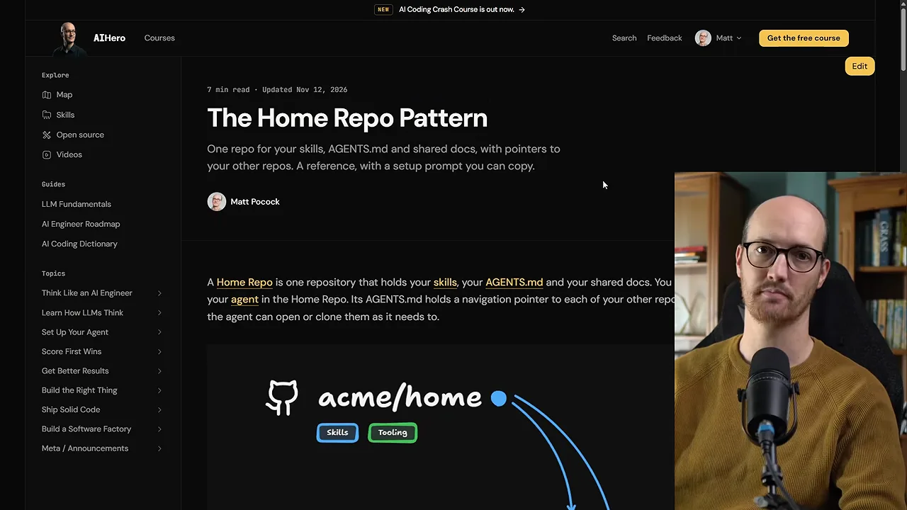
글 아래쪽에 복사해 쓰는 세팅 프롬프트가 있어요. 레포들을 담은 폴더에서 새 세션을 열고 붙여 넣으면, 에이전트가 내 환경을 두고 질문을 던지며(grill) 챙겨야 할 레포를 살핀 뒤, 자료를 홈 레포로 옮기기 시작해요. 화면에는 'How to work'와 'Step 1: Inventory the repos'까지 보여요.
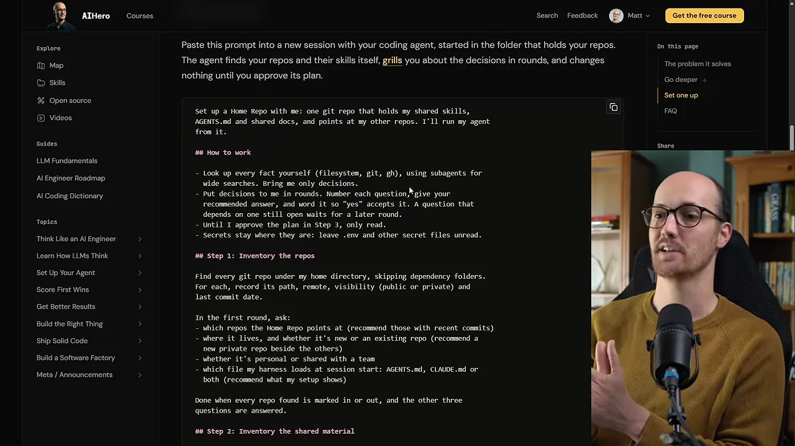
Matt는 너무 기본적이라 올릴 생각도 없던 패턴이지만, 이야기해 보니 사람들이 실제로 겪는 문제를 많이 풀어 준다는 걸 알게 됐다고 마무리해요.